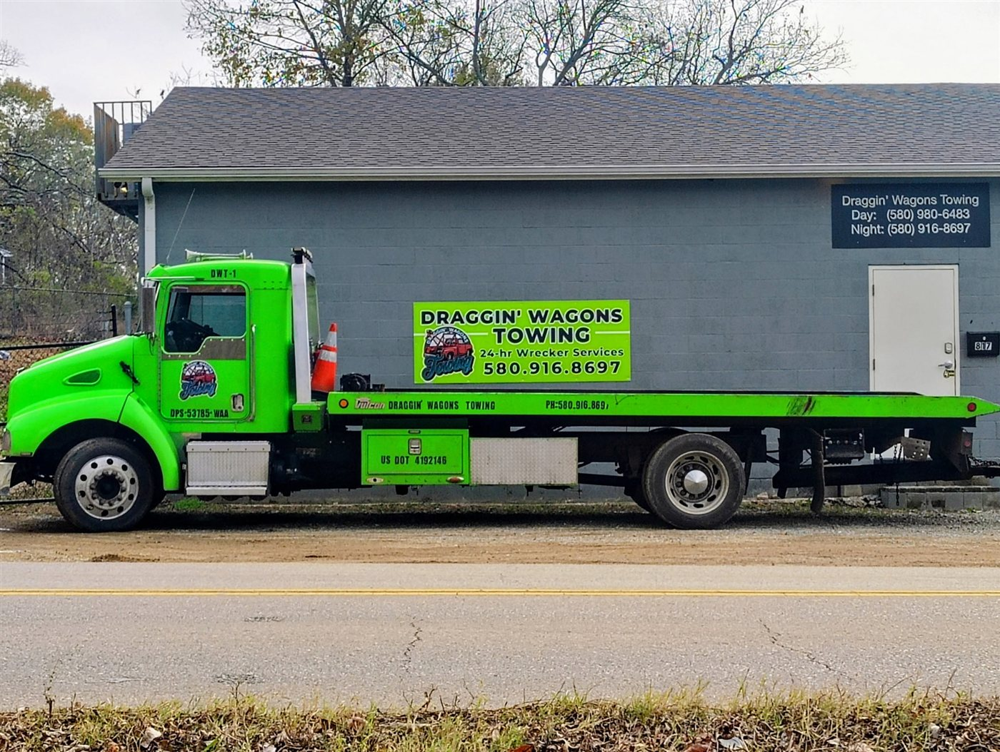
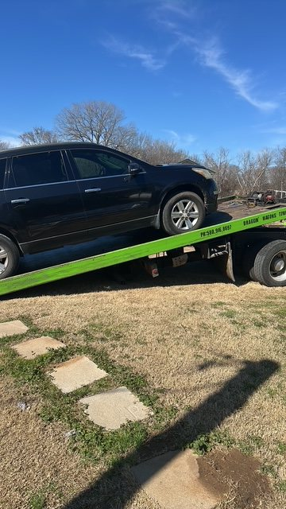
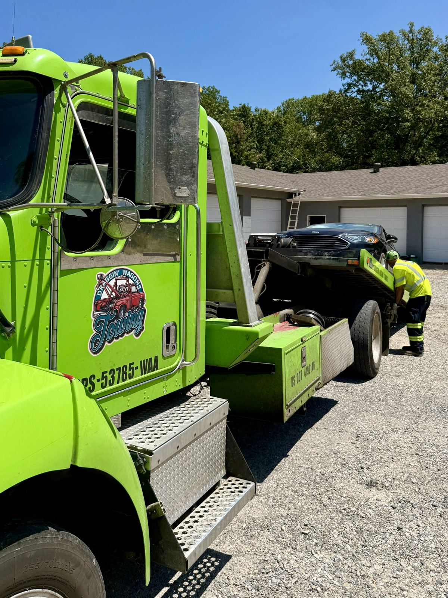

24/7 towing and roadside assistance across Bryan County and Marshall County, Oklahoma. Locally owned, father & son operated, and ready to roll day or night.

From a quick jumpstart to a long-distance heavy-duty tow, our crew handles it all, transparently priced with no surprises.
Based in Durant, OK, we run trucks throughout Bryan County and Marshall County, 24 hours a day, 7 days a week.

★★★★★ 4.9 average from 68 Google reviewers across Durant, Bryan & Marshall County.
"These guys saved me when I was stuck on the side of the road with a boat trailer that had both tires shredded. It was a 22ft pontoon boat and they were able to lift that thing and safely tow it to Walmart so I could get the tires replaced."
"Russ with Draggin' Wagons was such a pleasure to work with. He was so very friendly when he came to transport my vehicle and was there within the timeframe I was given. Would recommend this company and would use them again."
"Excellent experience when they towed my 36' Class A RV which was disabled because of a massive ice storm that caused the storage unit to collapse on my RV. They were very knowledgeable on how to remove the motorhome without further damage."
"I cannot thank these guys enough. Russ and Shane, you guys are awesome. I recommend you both to everyone who needs a tow or to get their trailer out of a ditch. Thank you so much and God bless Draggin' Wagons Towing!"
"This was my first time using this company. These guys here are the most friendliest, down to earth guys you will ever meet. I was immediately greeted with a smile, and the service was unbeatable."
"Quick and reliable service! We made a call to these guys and they were out here in no time! Hands down the best around."
No stock photos here. This is our crew, our trucks, and our neighbors we've helped get home safe.


